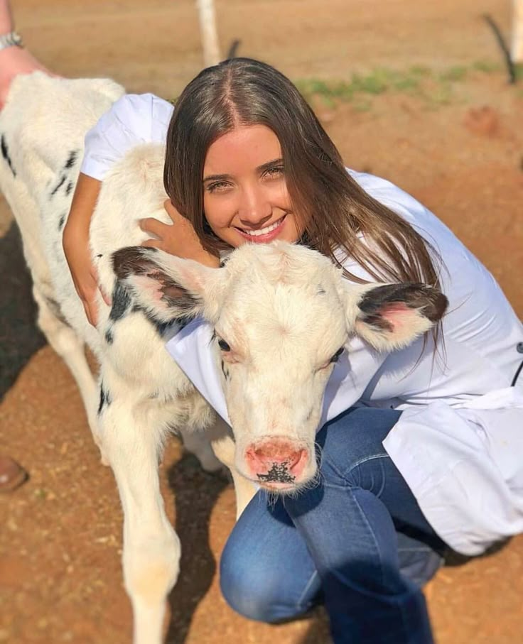
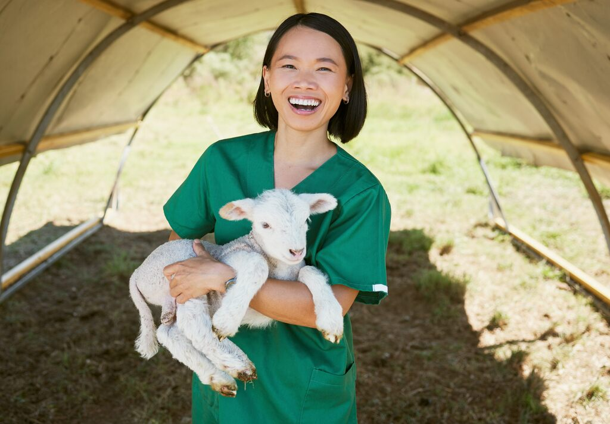

Nome do Profissional
Engenheiro Agrônomo
Especialista em agricultura e manejo do solo.
Conheça nossa equipe de profissionais capacitados, preparados para oferecer assistência técnica especializada nas áreas de agricultura e pecuária.
Engenheiro Agrônomo
Especialista em agricultura e manejo do solo.

Médico Veterinário
Especialista em saúde e produção animal.

Zootecnista
Especialista em nutrição e produção animal.
Técnico Agropecuário
Especialista em assistência técnica rural.
Profissional especializado em produção agrícola e manejo sustentável do solo, com conhecimento técnico voltado à melhoria da produtividade e à conservação dos recursos naturais. Atua oferecendo orientação e assistência técnica aos produtores rurais, auxiliando na escolha de práticas agrícolas eficientes, no preparo do solo e no desenvolvimento de uma agricultura mais sustentável.
Profissional especializado na saúde, bem-estar e manejo dos animais, atuando na prevenção, identificação e tratamento de doenças. Oferece orientação técnica aos produtores rurais sobre cuidados sanitários, vacinação, alimentação e controle de enfermidades, contribuindo para a qualidade da produção animal e o desenvolvimento sustentável da pecuária.
Profissional especializado na produção e nutrição animal, com atuação voltada ao melhoramento da produtividade e à qualidade da criação. Oferece orientação técnica sobre alimentação, reprodução, genética, manejo e bem-estar dos animais, contribuindo para o desenvolvimento de sistemas de produção mais eficientes, sustentáveis e economicamente viáveis.
Profissional capacitado para oferecer assistência técnica e orientação aos produtores rurais nas atividades agrícolas e pecuárias. Atua no acompanhamento da produção, manejo de culturas, criação de animais, conservação do solo e aplicação de boas práticas agropecuárias, contribuindo para o aumento da produtividade, a qualidade dos produtos e o desenvolvimento sustentável das propriedades rurais.